Compétences BUT GEII
Savoir-être & Savoir-faire
Pratiquant le rugby depuis l'âge de 10 ans jusqu'au niveau national, j'ai développé une culture du collectif profonde. Mon expérience de capitaine m'a appris à fédérer des profils différents autour d'un objectif commun et à décider sous pression.
Pratiquer la guitare pendant 13 ans et explorer continuellement l'électronique audio illustre ma capacité à m'engager sur le long terme. La progression constante et la recherche de la maîtrise sont des attitudes que j'applique à mes apprentissages techniques.
Gérer une équipe en situation de match à enjeux m'a habitué à prendre des décisions rapides et à en assumer les conséquences. Cette rigueur se retrouve dans ma façon d'aborder les diagnostics électroniques et l'analyse des systèmes.
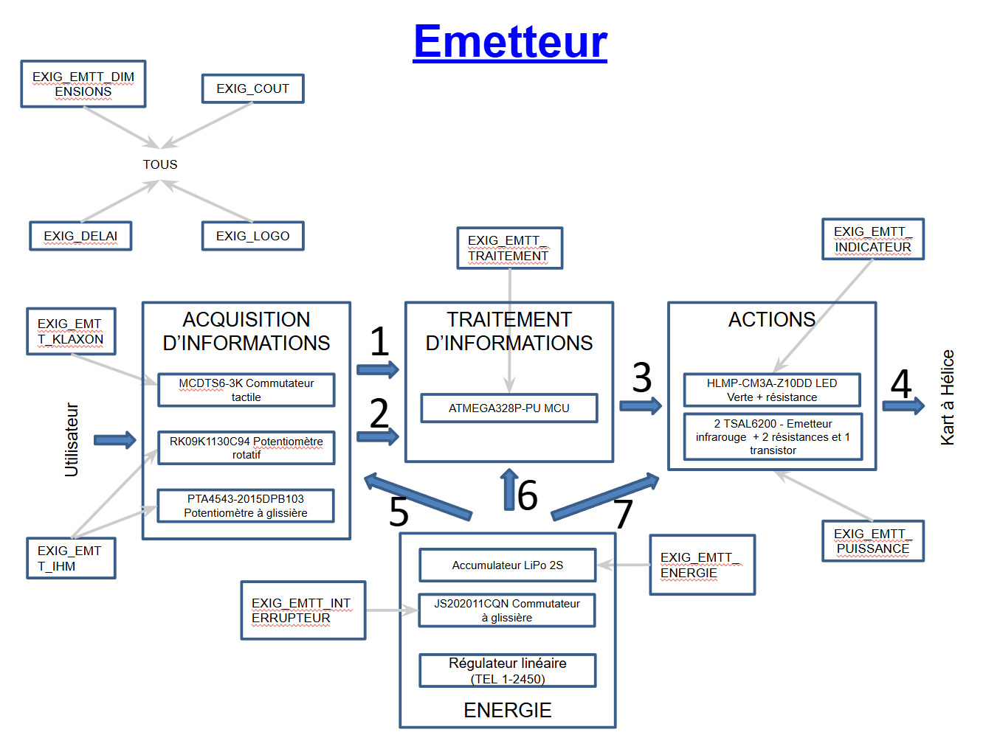
ou diagramme SYSML
prototype réalisé
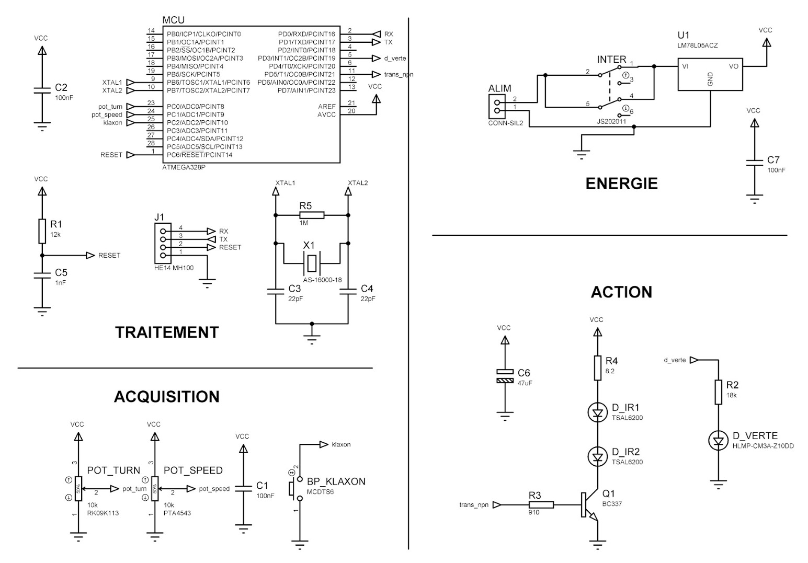
dossier de fabrication
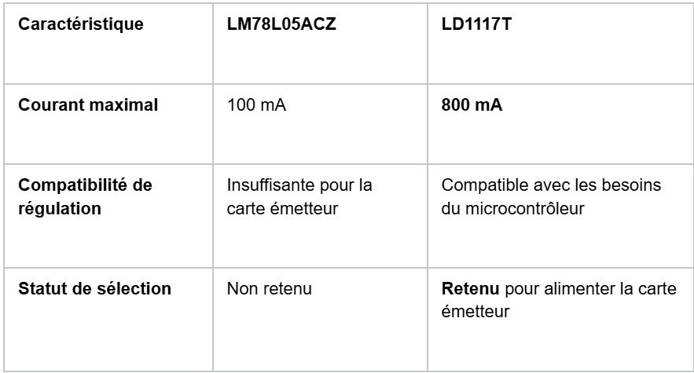
de solutions
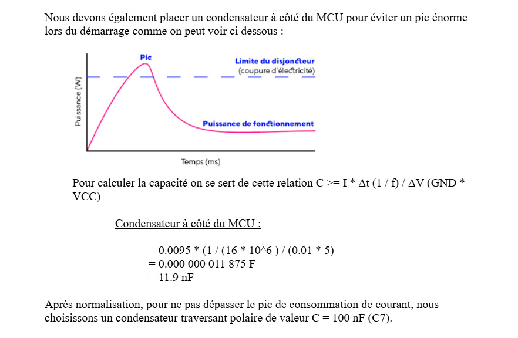
ou AMDEC
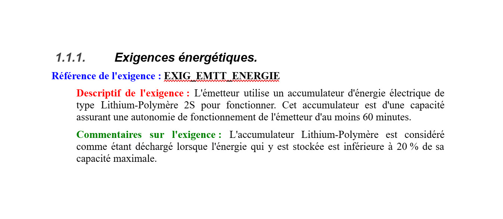
des charges rédigé
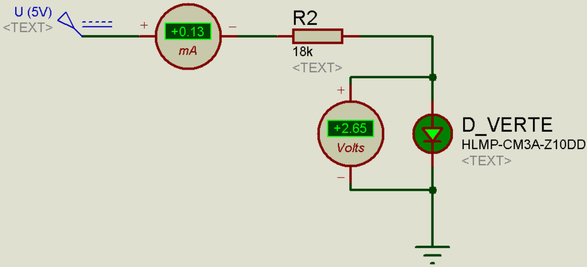
ou résultats de calculs
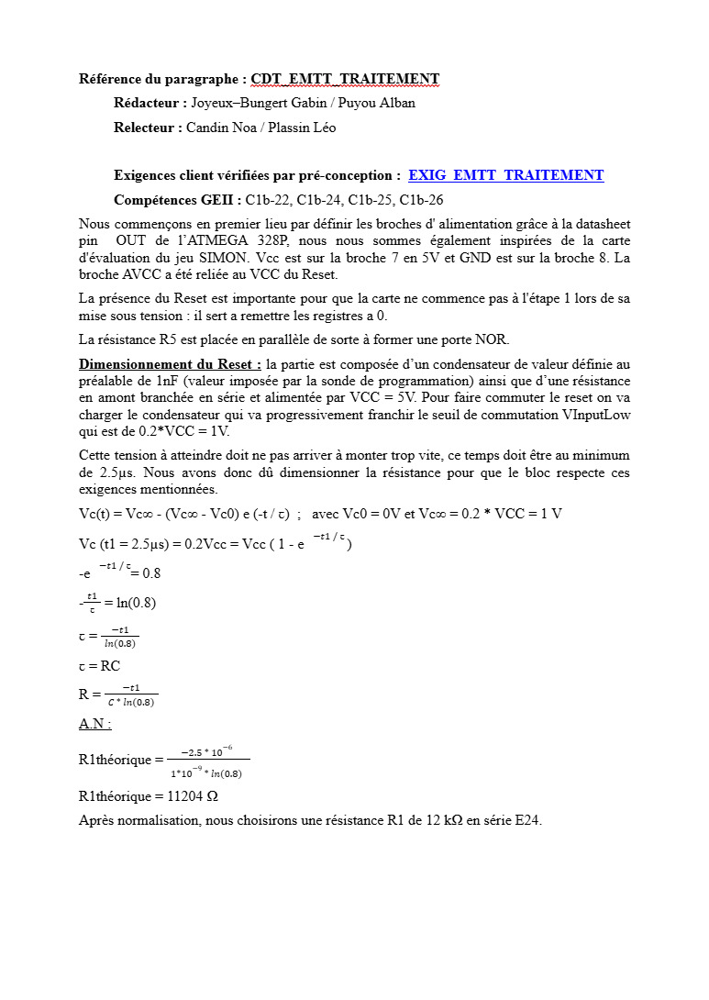
de conception
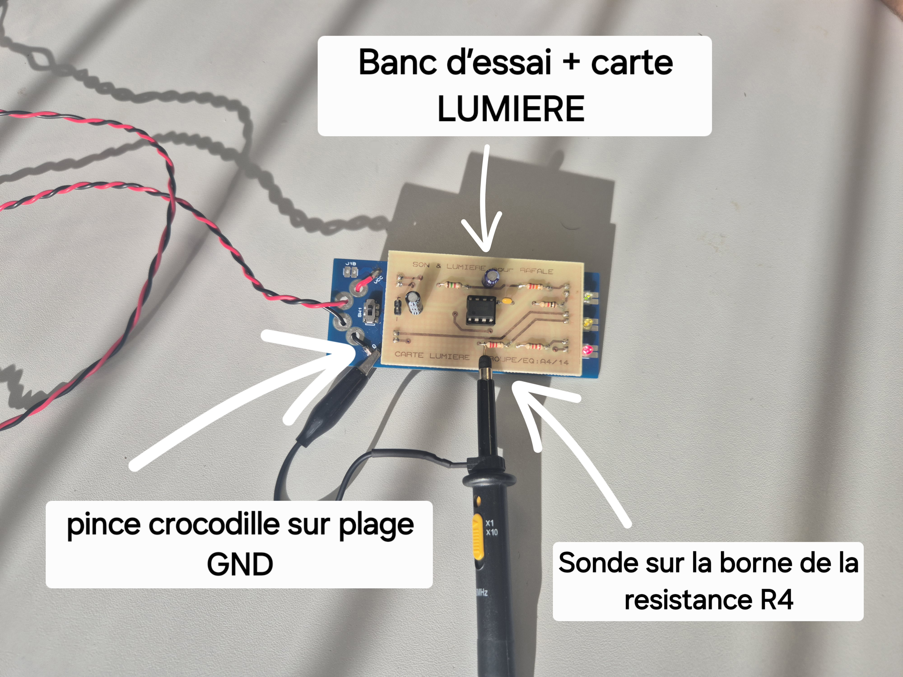
oscilloscope, mesures

ou courbe anormale
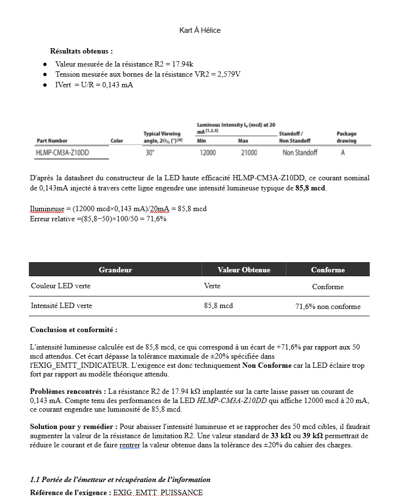
ou rapport de TP
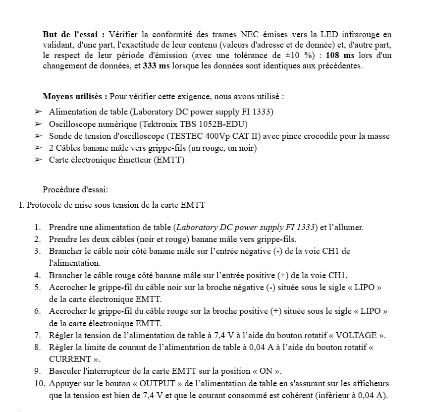
ou tableau de validation
mise en service
ou arbre des causes
ou correction appliquée
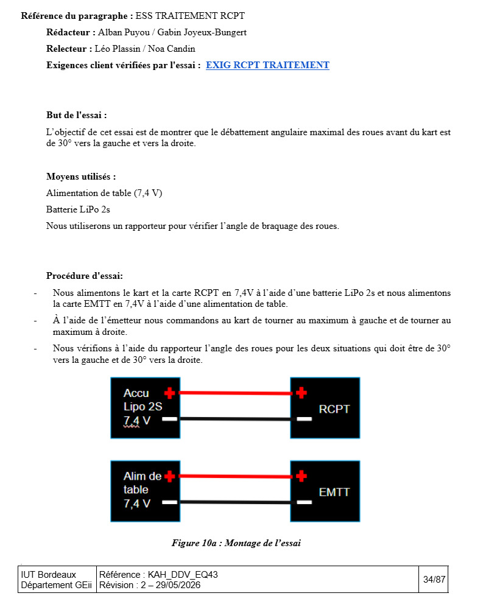
ou fiche de test